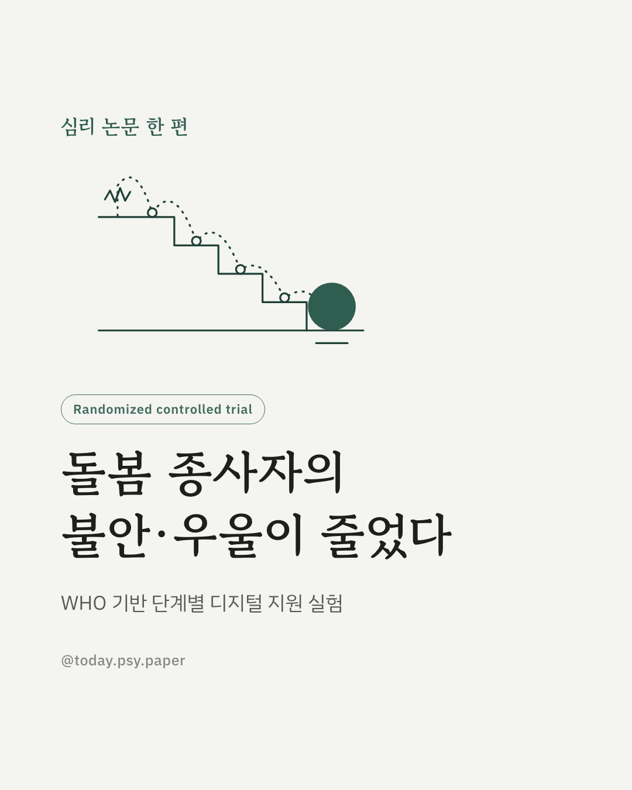
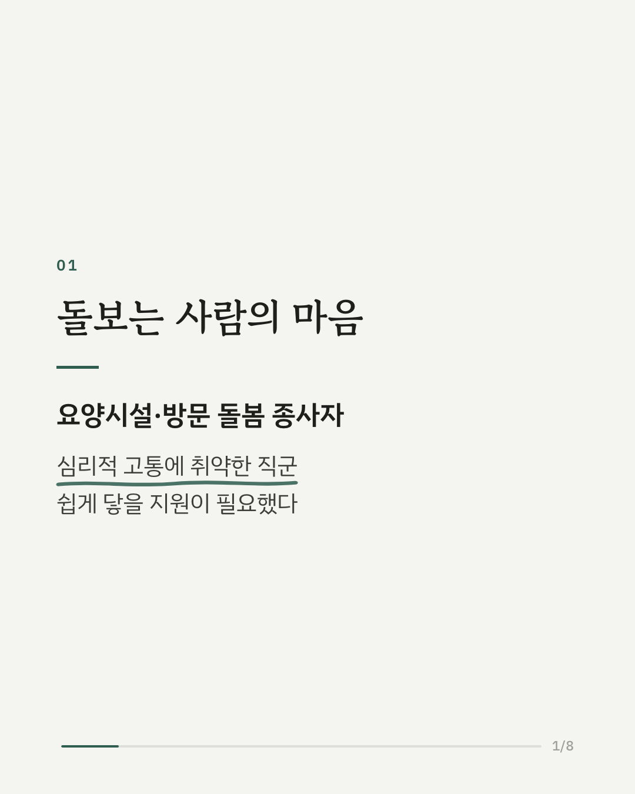
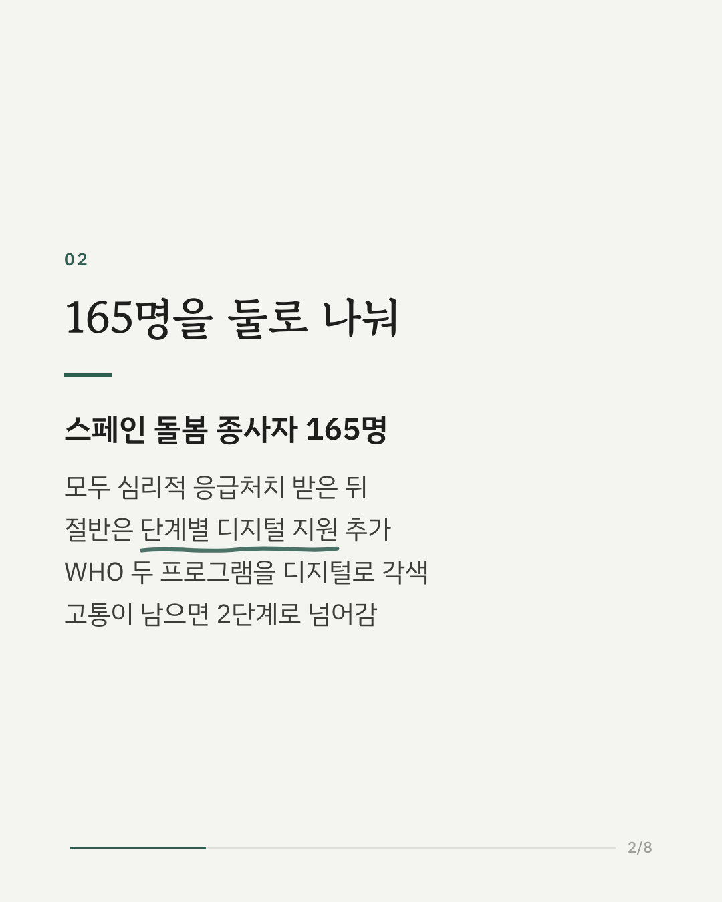
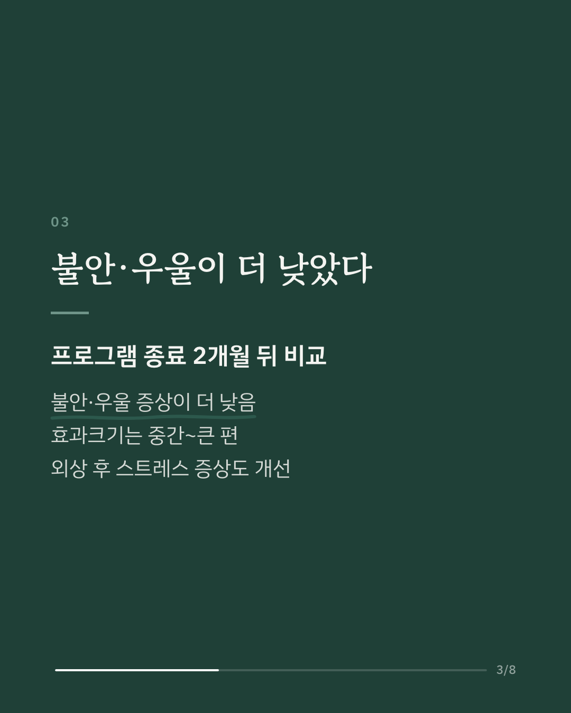
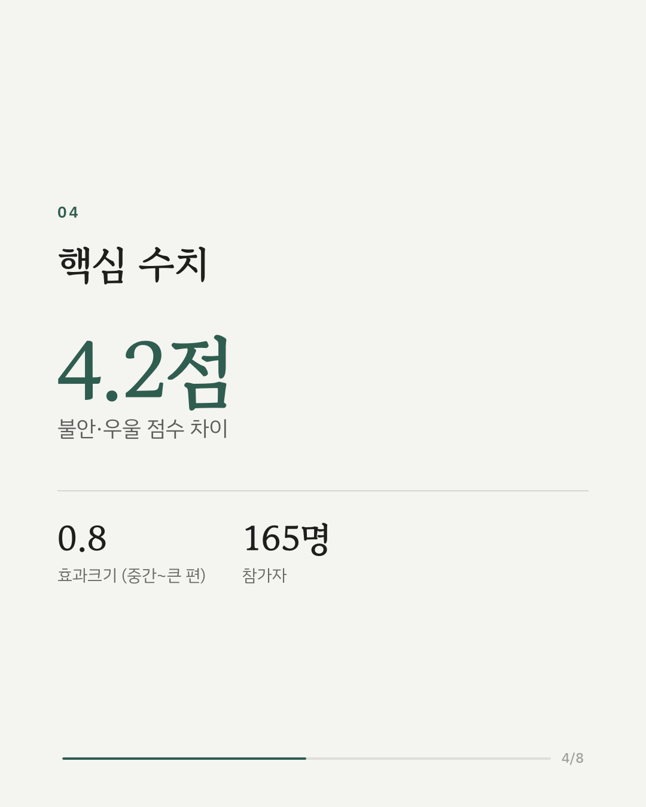
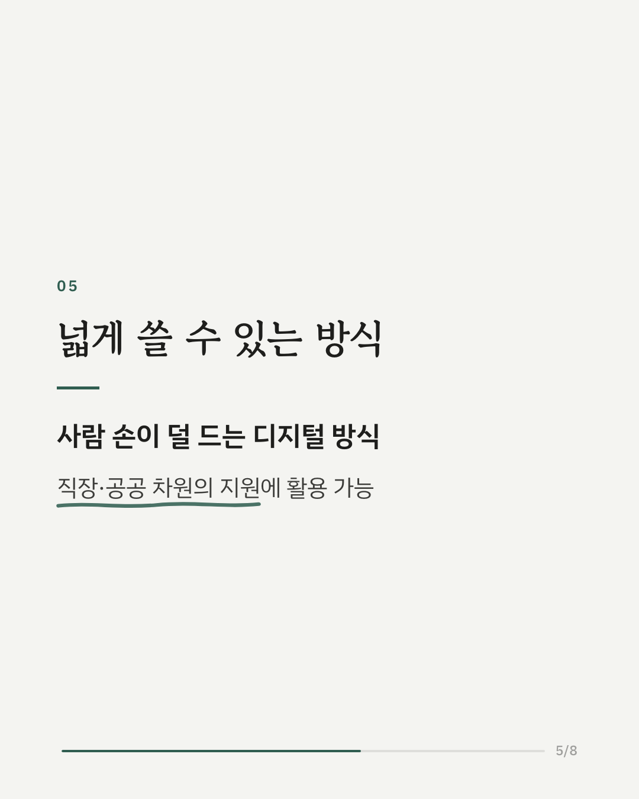
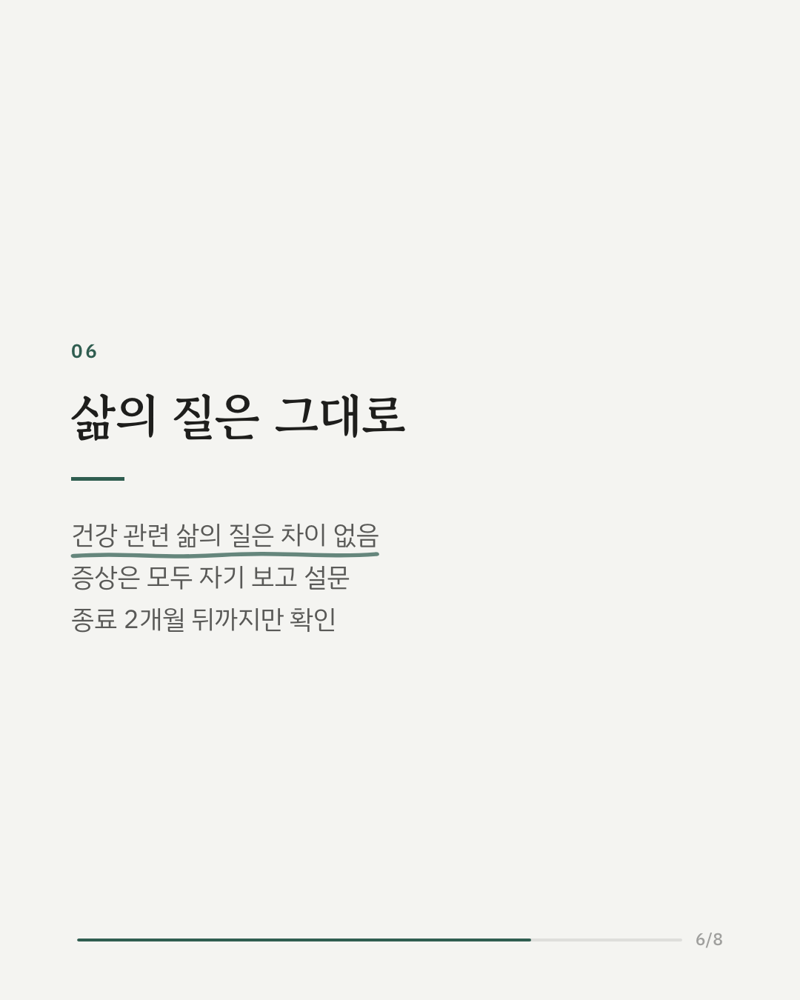
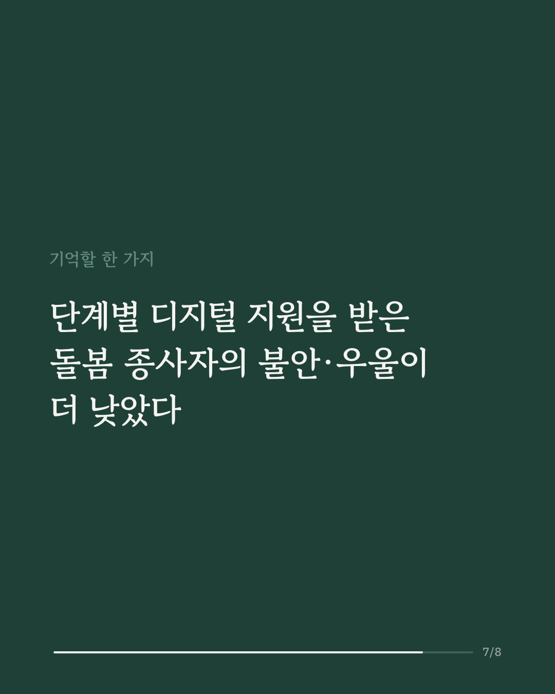
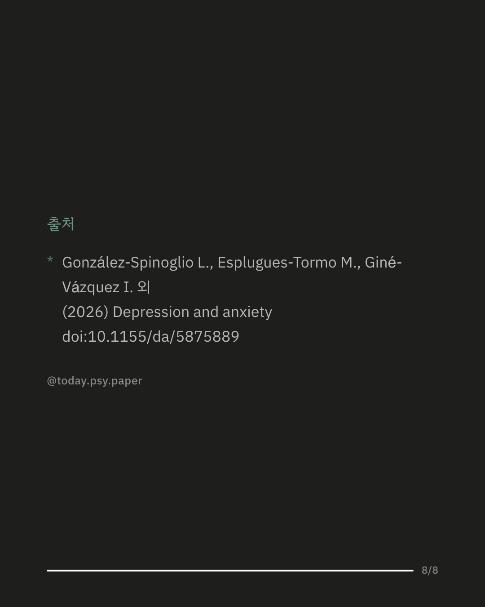

요양시설이나 가정에서 노인·환자를 돌보는 종사자는 불안과 우울 같은 심리적 고통을 겪기 쉬운 직군입니다. 스페인 연구진은 세계보건기구(WHO)의 두 심리 지원 프로그램을 디지털로 바꾼 '단계별 지원'이 이들에게 도움이 되는지 무작위 대조 시험으로 확인했습니다. 심리적 고통이 있는 카탈루냐 지역 돌봄 종사자 165명이 참여했습니다. 모두 심리적 응급처치를 받았고, 절반은 여기에 더해 스트레스 자가 관리 프로그램(1단계)을 진행했습니다. 그래도 고통이 남은 사람은 문제 해결 중심 프로그램(2단계)으로 넘어갔습니다. 프로그램이 끝나고 두 달 뒤, 단계별 지원을 받은 쪽의 불안·우울 증상이 더 낮았고 효과크기는 중간에서 큰 편이었습니다. 우울과 불안을 따로 봐도, 외상 후 스트레스 증상을 봐도 더 나아졌습니다. 다만 건강 관련 삶의 질은 두 집단 간 차이가 없었고, 증상은 모두 본인이 답한 설문으로 측정했습니다. Depression and Anxiety (2026), 'A Randomized Controlled Trial of a Digital Stepped-Care Program to Reduce Anxiety and Depressive Symptoms Among Long-Term Care Workers With Psychological Distress: The REPICAL Study' DOI: 10.1155/da/5875889 #임상심리 #정신건강정보 #심리학연구 #논문리뷰 #불안 #돌봄노동자 #직무스트레스 #디지털헬스
python3 publish.py 42829513